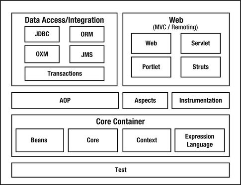
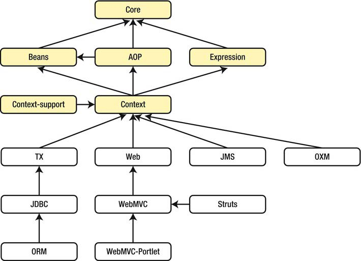
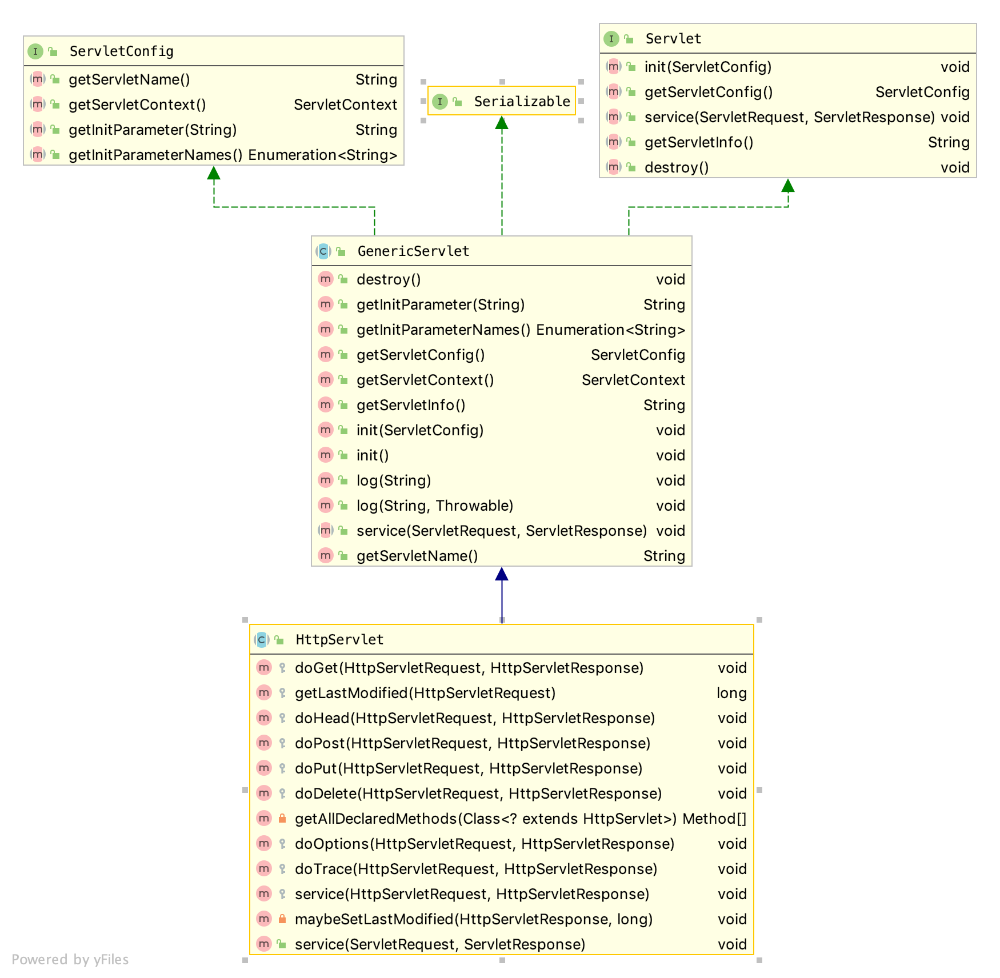
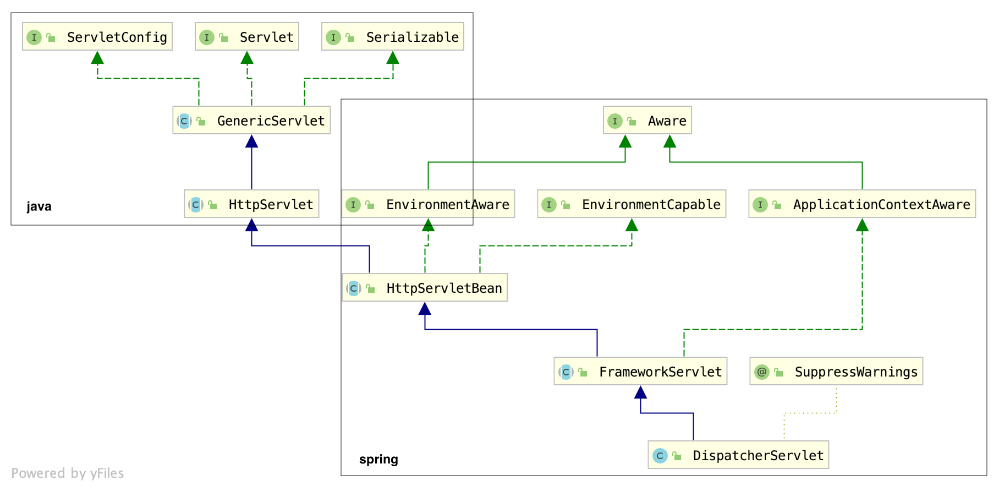
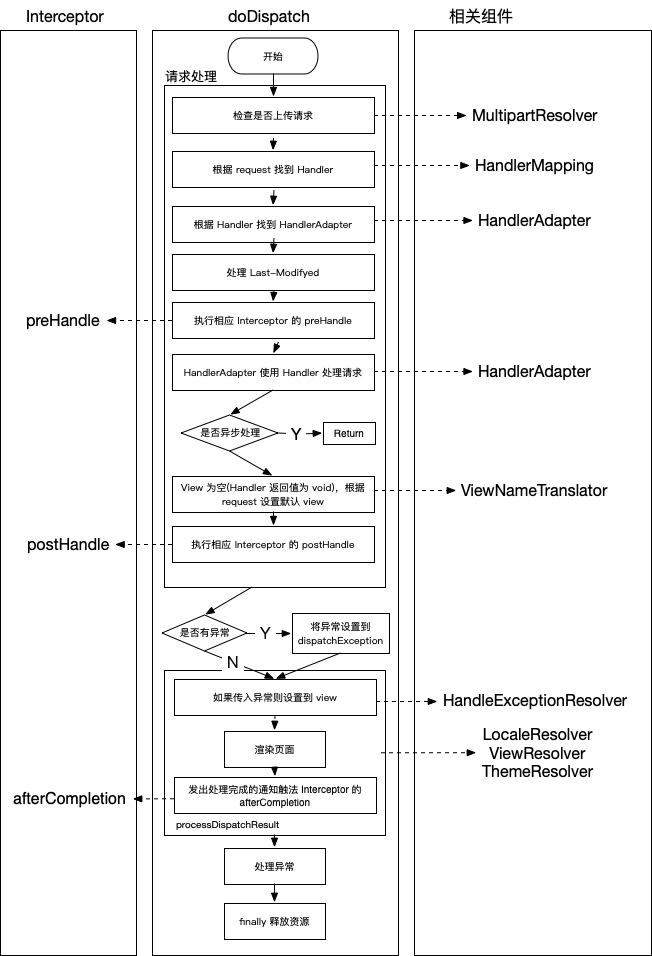

在学习 Spring MVC 之前，我们先快速回顾下 Spring，Spring 是 Java 企业软件开发的长期实际标准。它向我们中的许多人介绍了很多概念，例如依赖项注入，面向切面的编程（AOP）以及使用普通的 Java 对象（POJO）进行编程。
Spring 框架是由 Rod Johnson为《Expert One-on-One J2EE Design and Development》一书编写的代码演变而来。编写这本书是为了解释 JEE 中的一些复杂性以及如何克服它们。尽管在新的 JEE 规范中（特别是从 JEE 6 开始）已经解决了 JEE 的许多复杂性和问题，但 Spring 框架仍然非常流行。
该框架由几个模块组成（参见下图），这些模块可以协同工作并相互构建。我们可以选择我们要使用的模块。

大多数模块都依赖于 Spring Framework 中的某些其他模块。 核心模块是该规则的例外。下图概述了常用模块及其对其他模块的依赖性。

Spring Web MVC 是基于 Servlet API 构建的原始 Web 框架，正式名称 “ Spring Web MVC” 来自上述模块中的（spring-webmvc），但通常称为 “ Spring MVC”。
Spring MVC 本质上就是一个 Servlet，这里我们就不得不提一下 Servlet。
Servlet
Servlet 是 Server + Applet 的缩写，表示一个服务器应用。Servlet 其实是一套规范，按这套规范编写的代码就可以运行在 Java Servlet 容器中，比如最常见的 Tomcat 容器。
Servlet 的结构如图：

GenricServlet
GenricServlet 抽象类是与具体协议无关的，它是 Servlet 的默认实现，它主要做了三件事：
- 实现了
ServletConfig接口，我们可以直接调用 ServletConfig 里面的方法； - 提供了无参的
init方法； - 提供了
log方法。
Servlet 容器初始化时会调用 Servlet 的 init(ServletConfig) 方法，该抽象类接受配置类，并调用自身空实现的无参 init 方法。
HttpServlet
HttpServlet 是用 HTTP 协议[^ HTTP 协议]实现的 Servlet 的基类，Spring MVC 的 DispatcherServlet 就是继承自该类。既然 HttpServlet 是跟协议相关的，当然主要关心的是如何处理请求了，所以 HttpServlet 主要重写了 service 方法。在 service 方法中首先将 ServletRequest 和 ServletResponse 转换为了 HttpServletRequest 和 HttpServletResponse，然后根据 Http 请求的类型不同将请求路由到了不同的处理方法。
Spring MVC 架构
Spring MVC 中核心 Servlet 继承结构如下图所示。

GenericServlet、HttpServlet 在前面已经介绍过。
XXXAware 接口在 Spring 表示对 XXX 的感知，通俗点解释就是：如果在某个类里面想要使用 Spring 的一些东西,就可以通过实现 XXXAware 接口告诉 Spring，Spring 看到后就会给你送过来，而接收的方式是通过实现接口唯一的方法 set-XXX。
EnvironmentCapable，顾名思义，就是具有 Environment 的能力，也就是可以提供 Environment，所以 EnvironmentCapable 唯一的方法是 Environment getEnvironment()，用于实现 EnvironmentCapable 接口的类，就是告诉 Spring 它可以提供 Environment，当 Spring 需要 Environment 的时候就会调用其 getEnvironment 方法跟它要，该类封装了 ServletContext、ServletConfig、JndiProperty、系统环境变量和系统属性。HttpServletBean 抽象类在 init 方法中将配置参数设置到该 servlet 的 Bean 属性中。
HttpServletBean
HttpServletBean 主要参与了创建工作，并没有涉及请求的处理。
该抽象类重写了无参 init 方法，在该实现中首先将 Servlet 中配置的参数使用 BeanWrapper 设置到 Dispatcherservlet 中的相关属性，然后调用模板方法 initservletBean，子类就通过这个方法初始化。
FrameworkServlet
FrameworkServlet 抽象类主要提供了与 Spring ApplicationContext 的集成，该类重写 initservletBean 并在其中初始化了 WebApplicationContext；
该类重写了除 doHead 外各种请求的处理方法，并将处理都交给 processRequest 方法具体处理，在该处理中初始化了 LocaleContextHolder 和 RequestContextHolder 持有对象，以便我们可以轻松获取区域信息和请求信息，然后调用 doService 方法交给子类真正处理，在请求处理完时发布 ServletRequestHandledEvent 事件，不管请求是成功还是失败；
在 ApplicationContext 初始完毕或刷新时会调用 onRefresh 方法，该方法由子类实现。
在 FrameServlet 初始化 WebApplicationContext 时，会将 ServletContext 设置其中，监听 ContextRefreshedEvent 事件调用 OnRefresh 方法刷新 web 上下文。
DispatchServlet
Dispatcherservlet 是 Spring MVC 最核心的类，整个处理过程的顶层设计都在这里面，它是 FrameworkServlet 的默认实现。
其实现的 OnRefresh 方法主要初始化了 Servlet 需要用到的策略对象，代码如下：
1 | /** |
在各自的初始化方法中，都会先从 ApplicationContext 寻找相应 BeanName 的 Bean 实现类，找不到时会从 DispatcherServlet 相对路径的 DispatcherServlet.properties 配置文件中找到默认定义的实现类完全限定名称并加载。
请求处理
通过之前的分析我们知道，Dispatcherservlet 里面执行处理的人口方法应该是 doService, 不过 doService 并没有直接进行处理，而是交给了 doDispatch 进行具体的处理，在 doDispatch 处理前 doService 做了一些事情：
- 首先判断是不是
include请求，如果是则对 request 的 Attribute 做个快照备份，等 dispatch 处理完之后（如果不是异步调用且未完成）进行还原； - 在做完快照后又对 request 设置了一些属性：
webApplicationContext，localResolver，themeResolver，themeSource等
doDispatch 方法也非常简洁，从顶层设计了整个请求处理的过程。doDispatch 中最核心的代码只要4句，它们的任务分别是：
- 根据
request从HandlerMapping中找到Handler；
1 | HandlerExecutionChain mappedHandler = getHandler(processedRequest); |
- 根据
Handler找到对应的HandlerAdapter；
1 | HandlerAdapter ha = getHandlerAdapter(mappedHandler.getHandler()); |
- 用
HandlerAdapter处理Handler；
1 | ModelAndView mv = ha.handle(processedRequest, response, mappedHandler.getHandler()); |
- 调用
processDispatchResult方法处理上面处理之后的结果（包含找到 View 并渲染输出给用户）
对应的代码如下:
1 | processDispatchResult(processedRequest, response, mappedHandler, mv, dispatchException); |
doDispatch 请求的流程如下：

这里需要解释三个概念：HandlerMapping、 Handler 和 HandlerAdapter。这三个概念的准确理解对于 Spring MVC 的学习非常重要。如果对这三个概念理解得不够透彻，将会严重影响对 Spring MVC 的理解：
Handler
也就是处理器，它直接对应着 MVC 中的 C 也就是 Controller 层，它的具体表现形式有很多，可以是类,也可以是方法，如果你能想到别的表现形式也可以使用，它的类型是 Object。例如标注了@RequestMapping 的所有方法都可以看成一个 Handler。只要可以实际处理请求就可以是 Handler。
HandlerMapping
是用来查找 Handler 的，在 Spring MVC 中会处理很多请求，每个请求都需要一个 Handler 来处理，具体接收到一个请求后使用哪个 Handler 来处理呢？这就是 HandlerMapping 要做的事情。
标注了 RequestMapping 的方法，GetMapping、PostMapping、PutMapping、DeleteMapping 是 RequestMapping 的复合注解，就会使用 RequestMappingHandlerMapping 从扫描到的注释方法的地址中查找满足条件的 Handler。
这里的请求也可能是 websocket 请求，所以就会有 WebSocketHandlerMapping。
HandlerAdapter
从名字上就可以看出它是一个 Adapter，也就是适配器。因为 Spring MVC 中的 Handler 可以是任意的形式，只要能处理请求就 OK，但是 Servlet 需要的处理方法的结构却是固定的，都是以 request 和 response 为参数的方法（如 doService方法）。怎么让固定的 Servlet 处理方法调用灵活的 Handler 来进行处理呢？这就是 HandlerAdapter 要做的事情。
标注了 RequestMapping 的 HandlerMethod 就会使用 RequestMappingHandlerAdapter 来处理 Handler。
RequestMappingHandlerAdapter 内部使用 HandlerMethodArgumentResolver 集合处理传入参数，HandlerMethodReturnValueHandler 处理返回结果，HandlerMethodReturnValueHandler 会根据返回资源的类型找到合适的响应体，比如媒体文件会使用渐进式下载形式返回，对象会找到合适的 mediaType 类型，并使用 MessageConvter 处理并返回。我们的 JSON 形式返回就是在这里处理的。
我们也可以调用 setCustomArgumentResolvers 来自定义参数解析，比如解析字符串到日期类，setCustomReturnValueHandlers 来自定义返回值处理。
其它组件如下：
HandlerExceptionResolver
別的组件都是在正常情况下用来干活的，不过干活的过程中难免会出现问题，出问题后怎么办呢？这就需要有一个专门的角色对异常情况进行处理，在 Spring MVC 中就是 HandlerExceptionresolver。具体来说，此组件的作用是根据异常设置 ModelAndView，之后再交给 render 方法进行渲染。 render 只负责将 ModelAndView 渲染成页面，具体 ModelAndView 是怎么来 render 的并不关心。这也是 Spring MVC 设计优秀的一个表现一一分工明确互不干涉。通过前面 doDispatch 的分析可以知道 HandlerExceptionResolver 只是用于解析对请求做处理的过程中产生的异常，而渲染环节产生的异常不归它管，现在我们就知道原因了：它是在 render 之前工作的，先解析出 ModelAndView 之后 render 才去渲染，当然它就不能处理 render 过程中的异常了。
ViewResolver
ViewResolver 用来将 String 类型的视图名（有的地方也叫逻辑视图，都指同一个东西）和 Locale 解析为 View 类型的视图。
View 是用来渲染页面的，通俗点说就是要将程序返回的参数填入模板里，生成html（也可能是其他类型）文件。这里有两个关键的问题：
- 使用哪个模板？
- 用什么技术（或者规则）填入参数？
这其实就是 ViewResolver 主要要做的工作, ViewResolver 需要找到渲染所用的模板和所用的技术（也就是视图的类型）进行渲染，具体的渲染过程则交给不同的视图自己完成。最常使用的 UrlBasedViewResolver 都是针对单一类型试图进行解析，只需要找到使用的模版就可以了。比如，InternalResourceViewResolver 只针对 jsp 类型的视图，FreeMarkerViewResolver 只针对 FreeMarker 视图。
使用 ResponseBody 注解以 JSON 形式返回会在 Adapter 的 handle 中处理，并不会使用 ViewResolver。
RequestToViewNameTranslator
ViewResolver 是根据 ViewName 査找 View，但有的 Handler 处理完后并没有设置 View 也没有设置 ViewName，这时就需要从 request 获取 ViewName 了，而如何从 request 获取 ViewName 就是 RequestToViewTranslator 要做的事情。
LocaleResolver
解析视图需要两个参数：一个是视图名，另一个是 Locale。视图名是处理器返回的（或者使用 RequestTo NameTranslator 解析的默认视图名），Locale 是从哪里来的呢？这就是 LocaleResolver 要做的事情。
LocaleResolver 用于从 request 解析出 Locale。 Locale 是用来做 il8n（国际化）的基础。
ThemeResolver
解析主题使用，也就是配置不同的样式文件切换不同的主题。
MultiPartResolver
用于处理上传请求，处理方法是将普通的 request 包装成 MultipartHttpServletRequest，后者可以直接调用 getFile 方法获取到 File，如果上传多个文件，还可以调用 getFileMap 得到 Filename → File 结构的 Map，这样就使得上传请求的处理变得非常简单。
[^ HTTP 协议]: HTTP 协议是应用层协议，在 TCP/IP 协议接收到数据之后到达应用层。该协议中的报文结构非常重要。分为请求报文（request message）和响应报文（response message）。这两种类型都包括三部分：首行，头部和主体。请求报文的首行是请求行，包括请求类型、URL 和 HTTP 版本三项内容，响应请求的首行是状态行，包括 HTTP 版本、状态码和简短原因三项内容。™